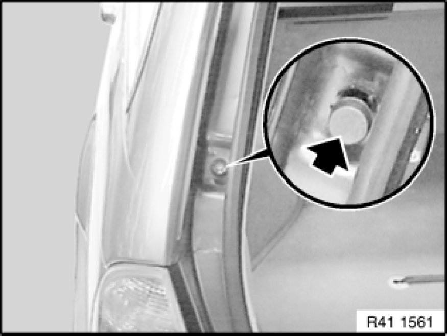

Trunk / Liftgate Latch: Adjustments
51 24 004 - Adjusting rear lid lock

Necessary preliminary tasks:
- Remove trim on tail panel at top 51 46 050 Removing and Installing/Replacing Top Trim on Rear Apron
Prerequisite:
Rear lid must be correctly adjusted to fit; if necessary, adjust rear lid Adjustments.
For ideal adjustment, refer to Body gap dimensions.

Screw in buffer stops for rear lid on left/right completely.
Note:
Operation is described in:
- Removing and installing/replacing buffer stops on rear lid Service and Repair.
Check fulcrum pads on lower section of rear lid lock for damage and replace if necessary.
Check striker (1) on rear lid for damage, replace if necessary.
Unclip cover (2).
Loosen screws on striker until it is just able to move and centers itself.
Important!
Striker must not scrape against the lower section of the rear lid lock.
Close trunk lid.
This automatically adjusts the striker correctly.
Open trunk lid.
Tighten down screws on striker.
Check adjustment of rear lid and striker, repeating adjustment if necessary.
Adjust buffer stops on rear lid.
Note:
Operation is described in:
- Removing and installing/replacing buffer stops on rear lid Service and Repair.